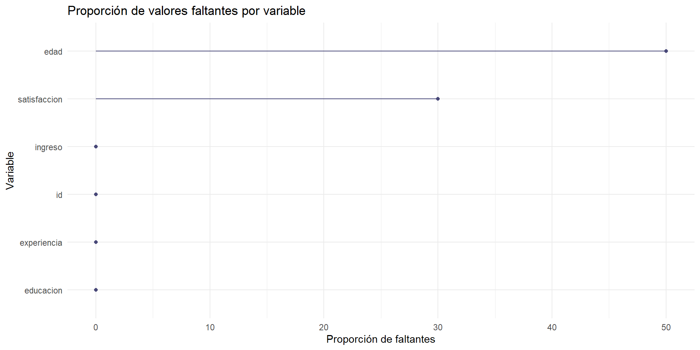
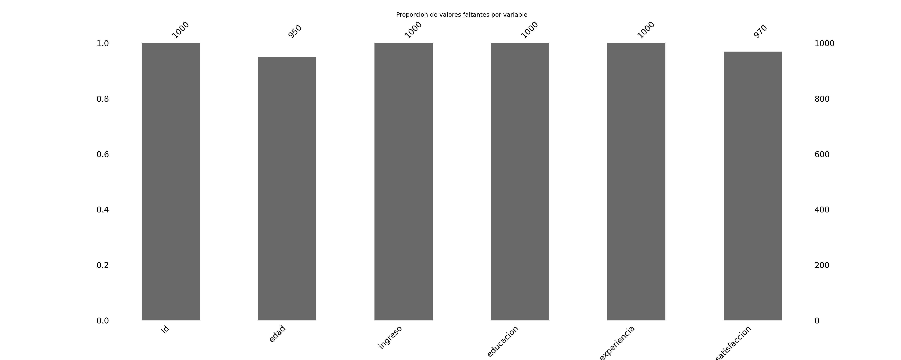
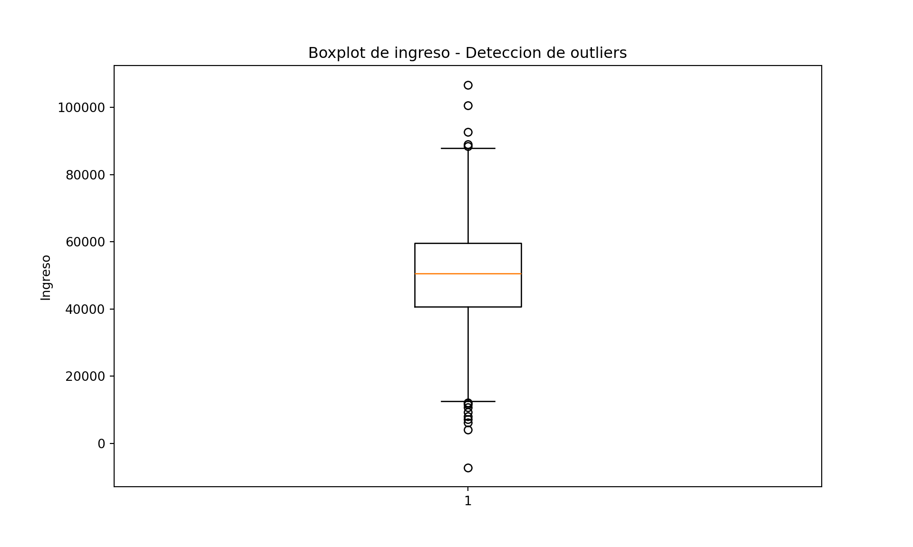

id edad ingreso educacion experiencia satisfaccion
1 1 28 35063 4 5 9
2 2 32 34401 5 14 6
3 3 54 49730 2 5 2
4 4 36 48017 5 6 NA
5 5 37 11760 3 15 1
6 6 56 65609 3 7 8 id edad ingreso educacion experiencia satisfaccion
0 1 22.0 38768 3 11 2.0
1 2 47.0 58514 3 14 10.0
2 3 38.0 60772 4 10 8.0
3 4 17.0 35009 4 4 3.0
4 5 28.0 57123 3 14 2.0 id edad ingreso educacion
Min. : 1.0 Min. : 1.00 Min. : 4282 Min. :1.000
1st Qu.: 250.8 1st Qu.:28.00 1st Qu.: 40462 1st Qu.:2.000
Median : 500.5 Median :35.00 Median : 51094 Median :3.000
Mean : 500.5 Mean :35.23 Mean : 54907 Mean :3.164
3rd Qu.: 750.2 3rd Qu.:43.00 3rd Qu.: 62080 3rd Qu.:4.000
Max. :1000.0 Max. :67.00 Max. :416085 Max. :5.000
NA's :50
experiencia satisfaccion
Min. :-12.00 Min. : 1.000
1st Qu.: 6.00 1st Qu.: 3.000
Median : 10.00 Median : 5.000
Mean : 10.01 Mean : 5.478
3rd Qu.: 15.00 3rd Qu.: 8.000
Max. : 34.00 Max. :10.000
NA's :30 'data.frame': 1000 obs. of 6 variables:
$ id : int 1 2 3 4 5 6 7 8 9 10 ...
$ edad : num 28 32 54 36 37 56 41 20 27 30 ...
$ ingreso : num 35063 34401 49730 48017 11760 ...
$ educacion : int 4 5 2 5 3 3 5 3 2 1 ...
$ experiencia : num 5 14 5 6 15 7 10 17 2 21 ...
$ satisfaccion: num 9 6 2 NA 1 8 5 2 7 7 ...
Equivalente en Python
id edad ... experiencia satisfaccion
count 1000.000000 950.000000 ... 1000.000000 970.000000
mean 500.500000 34.511579 ... 10.159000 5.583505
std 288.819436 11.902633 ... 6.874371 2.570319
min 1.000000 -4.000000 ... -9.000000 1.000000
25% 250.750000 27.000000 ... 5.000000 3.000000
50% 500.500000 34.000000 ... 10.000000 6.000000
75% 750.250000 43.000000 ... 15.000000 8.000000
max 1000.000000 78.000000 ... 31.000000 10.000000
[8 rows x 6 columns]<class 'pandas.core.frame.DataFrame'>
RangeIndex: 1000 entries, 0 to 999
Data columns (total 6 columns):
# Column Non-Null Count Dtype
--- ------ -------------- -----
0 id 1000 non-null int64
1 edad 950 non-null float64
2 ingreso 1000 non-null int64
3 educacion 1000 non-null int64
4 experiencia 1000 non-null int64
5 satisfaccion 970 non-null float64
dtypes: float64(2), int64(4)
memory usage: 47.0 KB
None
Tipos de imputacion 1. Imputacion simple: - Media / Mediana / Moda - Valor constante - Ultimo valor observado (LOCF) 2. Imputacion avanzada: - Regresion - K-Nearest (KNN) - Imputacion multiple por ecuaciones encadenadas (MICE) - Imputacion por arboles de decision
# Método 1: Imputación por mediana
datos_r_mediana <- datos_r
datos_r_mediana$edad[is.na(datos_r_mediana$edad)] <-
median(datos_r_mediana$edad, na.rm = TRUE)
datos_r_mediana$satisfaccion[is.na(datos_r_mediana$satisfaccion)] <-
median(datos_r_mediana$satisfaccion, na.rm = TRUE)
# Método 2: Imputación por regresión lineal
modelo_edad <- lm(edad ~ ingreso + educacion + experiencia, data = datos_r)
datos_r_lm <- datos_r
indices_na_edad <- which(is.na(datos_r_lm$edad))
if (length(indices_na_edad) > 0) {
datos_r_lm$edad[indices_na_edad] <-
predict(modelo_edad, newdata = datos_r_lm[indices_na_edad, ])
}
# Método 3: Imputación múltiple (MICE)
imputaciones <- mice(datos_r, m = 5, method = "pmm", maxit = 50, seed = 123)
iter imp variable
1 1 edad satisfaccion
1 2 edad satisfaccion
1 3 edad satisfaccion
1 4 edad satisfaccion
1 5 edad satisfaccion
2 1 edad satisfaccion
2 2 edad satisfaccion
2 3 edad satisfaccion
2 4 edad satisfaccion
2 5 edad satisfaccion
3 1 edad satisfaccion
3 2 edad satisfaccion
3 3 edad satisfaccion
3 4 edad satisfaccion
3 5 edad satisfaccion
4 1 edad satisfaccion
4 2 edad satisfaccion
4 3 edad satisfaccion
4 4 edad satisfaccion
4 5 edad satisfaccion
5 1 edad satisfaccion
5 2 edad satisfaccion
5 3 edad satisfaccion
5 4 edad satisfaccion
5 5 edad satisfaccion
6 1 edad satisfaccion
6 2 edad satisfaccion
6 3 edad satisfaccion
6 4 edad satisfaccion
6 5 edad satisfaccion
7 1 edad satisfaccion
7 2 edad satisfaccion
7 3 edad satisfaccion
7 4 edad satisfaccion
7 5 edad satisfaccion
8 1 edad satisfaccion
8 2 edad satisfaccion
8 3 edad satisfaccion
8 4 edad satisfaccion
8 5 edad satisfaccion
9 1 edad satisfaccion
9 2 edad satisfaccion
9 3 edad satisfaccion
9 4 edad satisfaccion
9 5 edad satisfaccion
10 1 edad satisfaccion
10 2 edad satisfaccion
10 3 edad satisfaccion
10 4 edad satisfaccion
10 5 edad satisfaccion
11 1 edad satisfaccion
11 2 edad satisfaccion
11 3 edad satisfaccion
11 4 edad satisfaccion
11 5 edad satisfaccion
12 1 edad satisfaccion
12 2 edad satisfaccion
12 3 edad satisfaccion
12 4 edad satisfaccion
12 5 edad satisfaccion
13 1 edad satisfaccion
13 2 edad satisfaccion
13 3 edad satisfaccion
13 4 edad satisfaccion
13 5 edad satisfaccion
14 1 edad satisfaccion
14 2 edad satisfaccion
14 3 edad satisfaccion
14 4 edad satisfaccion
14 5 edad satisfaccion
15 1 edad satisfaccion
15 2 edad satisfaccion
15 3 edad satisfaccion
15 4 edad satisfaccion
15 5 edad satisfaccion
16 1 edad satisfaccion
16 2 edad satisfaccion
16 3 edad satisfaccion
16 4 edad satisfaccion
16 5 edad satisfaccion
17 1 edad satisfaccion
17 2 edad satisfaccion
17 3 edad satisfaccion
17 4 edad satisfaccion
17 5 edad satisfaccion
18 1 edad satisfaccion
18 2 edad satisfaccion
18 3 edad satisfaccion
18 4 edad satisfaccion
18 5 edad satisfaccion
19 1 edad satisfaccion
19 2 edad satisfaccion
19 3 edad satisfaccion
19 4 edad satisfaccion
19 5 edad satisfaccion
20 1 edad satisfaccion
20 2 edad satisfaccion
20 3 edad satisfaccion
20 4 edad satisfaccion
20 5 edad satisfaccion
21 1 edad satisfaccion
21 2 edad satisfaccion
21 3 edad satisfaccion
21 4 edad satisfaccion
21 5 edad satisfaccion
22 1 edad satisfaccion
22 2 edad satisfaccion
22 3 edad satisfaccion
22 4 edad satisfaccion
22 5 edad satisfaccion
23 1 edad satisfaccion
23 2 edad satisfaccion
23 3 edad satisfaccion
23 4 edad satisfaccion
23 5 edad satisfaccion
24 1 edad satisfaccion
24 2 edad satisfaccion
24 3 edad satisfaccion
24 4 edad satisfaccion
24 5 edad satisfaccion
25 1 edad satisfaccion
25 2 edad satisfaccion
25 3 edad satisfaccion
25 4 edad satisfaccion
25 5 edad satisfaccion
26 1 edad satisfaccion
26 2 edad satisfaccion
26 3 edad satisfaccion
26 4 edad satisfaccion
26 5 edad satisfaccion
27 1 edad satisfaccion
27 2 edad satisfaccion
27 3 edad satisfaccion
27 4 edad satisfaccion
27 5 edad satisfaccion
28 1 edad satisfaccion
28 2 edad satisfaccion
28 3 edad satisfaccion
28 4 edad satisfaccion
28 5 edad satisfaccion
29 1 edad satisfaccion
29 2 edad satisfaccion
29 3 edad satisfaccion
29 4 edad satisfaccion
29 5 edad satisfaccion
30 1 edad satisfaccion
30 2 edad satisfaccion
30 3 edad satisfaccion
30 4 edad satisfaccion
30 5 edad satisfaccion
31 1 edad satisfaccion
31 2 edad satisfaccion
31 3 edad satisfaccion
31 4 edad satisfaccion
31 5 edad satisfaccion
32 1 edad satisfaccion
32 2 edad satisfaccion
32 3 edad satisfaccion
32 4 edad satisfaccion
32 5 edad satisfaccion
33 1 edad satisfaccion
33 2 edad satisfaccion
33 3 edad satisfaccion
33 4 edad satisfaccion
33 5 edad satisfaccion
34 1 edad satisfaccion
34 2 edad satisfaccion
34 3 edad satisfaccion
34 4 edad satisfaccion
34 5 edad satisfaccion
35 1 edad satisfaccion
35 2 edad satisfaccion
35 3 edad satisfaccion
35 4 edad satisfaccion
35 5 edad satisfaccion
36 1 edad satisfaccion
36 2 edad satisfaccion
36 3 edad satisfaccion
36 4 edad satisfaccion
36 5 edad satisfaccion
37 1 edad satisfaccion
37 2 edad satisfaccion
37 3 edad satisfaccion
37 4 edad satisfaccion
37 5 edad satisfaccion
38 1 edad satisfaccion
38 2 edad satisfaccion
38 3 edad satisfaccion
38 4 edad satisfaccion
38 5 edad satisfaccion
39 1 edad satisfaccion
39 2 edad satisfaccion
39 3 edad satisfaccion
39 4 edad satisfaccion
39 5 edad satisfaccion
40 1 edad satisfaccion
40 2 edad satisfaccion
40 3 edad satisfaccion
40 4 edad satisfaccion
40 5 edad satisfaccion
41 1 edad satisfaccion
41 2 edad satisfaccion
41 3 edad satisfaccion
41 4 edad satisfaccion
41 5 edad satisfaccion
42 1 edad satisfaccion
42 2 edad satisfaccion
42 3 edad satisfaccion
42 4 edad satisfaccion
42 5 edad satisfaccion
43 1 edad satisfaccion
43 2 edad satisfaccion
43 3 edad satisfaccion
43 4 edad satisfaccion
43 5 edad satisfaccion
44 1 edad satisfaccion
44 2 edad satisfaccion
44 3 edad satisfaccion
44 4 edad satisfaccion
44 5 edad satisfaccion
45 1 edad satisfaccion
45 2 edad satisfaccion
45 3 edad satisfaccion
45 4 edad satisfaccion
45 5 edad satisfaccion
46 1 edad satisfaccion
46 2 edad satisfaccion
46 3 edad satisfaccion
46 4 edad satisfaccion
46 5 edad satisfaccion
47 1 edad satisfaccion
47 2 edad satisfaccion
47 3 edad satisfaccion
47 4 edad satisfaccion
47 5 edad satisfaccion
48 1 edad satisfaccion
48 2 edad satisfaccion
48 3 edad satisfaccion
48 4 edad satisfaccion
48 5 edad satisfaccion
49 1 edad satisfaccion
49 2 edad satisfaccion
49 3 edad satisfaccion
49 4 edad satisfaccion
49 5 edad satisfaccion
50 1 edad satisfaccion
50 2 edad satisfaccion
50 3 edad satisfaccion
50 4 edad satisfaccion
50 5 edad satisfacciondatos_r_mice <- complete(imputaciones, 1)
# Comparación de métodos
comparacion <- data.frame(
Variable = c("Edad", "Satisfaccion"),
Original_NA = c(
sum(is.na(datos_r$edad)),
sum(is.na(datos_r$satisfaccion))
),
Mediana_NA = c(
sum(is.na(datos_r_mediana$edad)),
sum(is.na(datos_r_mediana$satisfaccion))
),
LM_NA = c(
sum(is.na(datos_r_lm$edad)),
sum(is.na(datos_r_lm$satisfaccion))
),
MICE_NA = c(
sum(is.na(datos_r_mice$edad)),
sum(is.na(datos_r_mice$satisfaccion))
)
)
print(comparacion) Variable Original_NA Mediana_NA LM_NA MICE_NA
1 Edad 50 0 0 0
2 Satisfaccion 30 0 30 0 id edad ingreso educacion experiencia satisfaccion
63 63 NA 66742 4 10 5
70 70 NA 383435 4 14 5
73 73 NA 34617 4 6 3
107 107 NA 35217 1 14 4
121 121 NA 40352 5 18 2
126 126 NA 97761 1 12 4
164 164 NA 48272 3 10 9
178 178 NA 49849 3 7 1
293 293 NA 49423 3 10 8
309 309 NA 35839 2 9 4
340 340 NA 43422 3 16 3
377 377 NA 31067 3 14 6
380 380 NA 59310 2 -3 1
386 386 NA 20470 4 9 6
389 389 NA 60870 2 21 5
414 414 NA 62093 3 13 5
433 433 NA 57175 5 2 2
450 450 NA 49479 2 10 10
462 462 NA 60943 2 12 7
463 463 NA 57504 3 12 4
464 464 NA 59514 3 24 4
480 480 NA 48307 3 22 7
505 505 NA 66805 3 28 8
511 511 NA 46426 5 20 7
513 513 NA 61420 3 -2 8
553 553 NA 34462 3 11 7
564 564 NA 58042 3 6 10
576 576 NA 62294 1 18 9
579 579 NA 49350 2 12 8
581 581 NA 37649 3 20 1
608 608 NA 64846 2 9 7
633 633 NA 30620 2 1 6
672 672 NA 65188 2 -3 3
705 705 NA 76856 2 -7 7
707 707 NA 47478 3 7 9
754 754 NA 33190 5 18 6
782 782 NA 42442 4 -2 9
786 786 NA 66603 3 24 4
788 788 NA 65506 5 28 1
811 811 NA 54349 2 9 8
836 836 NA 62418 3 2 6
877 877 NA 86204 3 14 1
896 896 NA 37095 2 1 4
915 915 NA 52127 4 9 8
932 932 NA 67664 4 21 9
952 952 NA 57092 3 18 10
962 962 NA 80169 5 18 3
974 974 NA 73570 5 24 5
987 987 NA 51805 5 5 4
995 995 NA 30800 4 2 9 id edad ingreso educacion experiencia satisfaccion
63 63 35 66742 4 10 5
70 70 35 383435 4 14 5
73 73 35 34617 4 6 3
107 107 35 35217 1 14 4
121 121 35 40352 5 18 2
126 126 35 97761 1 12 4
164 164 35 48272 3 10 9
178 178 35 49849 3 7 1
293 293 35 49423 3 10 8
309 309 35 35839 2 9 4
340 340 35 43422 3 16 3
377 377 35 31067 3 14 6
380 380 35 59310 2 -3 1
386 386 35 20470 4 9 6
389 389 35 60870 2 21 5
414 414 35 62093 3 13 5
433 433 35 57175 5 2 2
450 450 35 49479 2 10 10
462 462 35 60943 2 12 7
463 463 35 57504 3 12 4
464 464 35 59514 3 24 4
480 480 35 48307 3 22 7
505 505 35 66805 3 28 8
511 511 35 46426 5 20 7
513 513 35 61420 3 -2 8
553 553 35 34462 3 11 7
564 564 35 58042 3 6 10
576 576 35 62294 1 18 9
579 579 35 49350 2 12 8
581 581 35 37649 3 20 1
608 608 35 64846 2 9 7
633 633 35 30620 2 1 6
672 672 35 65188 2 -3 3
705 705 35 76856 2 -7 7
707 707 35 47478 3 7 9
754 754 35 33190 5 18 6
782 782 35 42442 4 -2 9
786 786 35 66603 3 24 4
788 788 35 65506 5 28 1
811 811 35 54349 2 9 8
836 836 35 62418 3 2 6
877 877 35 86204 3 14 1
896 896 35 37095 2 1 4
915 915 35 52127 4 9 8
932 932 35 67664 4 21 9
952 952 35 57092 3 18 10
962 962 35 80169 5 18 3
974 974 35 73570 5 24 5
987 987 35 51805 5 5 4
995 995 35 30800 4 2 9 id edad ingreso educacion experiencia satisfaccion
63 63 35.34437 66742 4 10 5
70 70 42.36677 383435 4 14 5
73 73 34.73247 34617 4 6 3
107 107 35.08423 35217 1 14 4
121 121 34.33904 40352 5 18 2
126 126 36.54905 97761 1 12 4
164 164 35.11556 48272 3 10 9
178 178 35.23493 49849 3 7 1
293 293 35.14149 49423 3 10 8
309 309 35.05070 35839 2 9 4
340 340 34.83863 43422 3 16 3
377 377 34.61620 31067 3 14 6
380 380 35.91478 59310 2 -3 1
386 386 34.32994 20470 4 9 6
389 389 35.27922 60870 2 21 5
414 414 35.34307 62093 3 13 5
433 433 35.16515 57175 5 2 2
450 450 35.33002 49479 2 10 10
462 462 35.53238 60943 2 12 7
463 463 35.26764 57504 3 12 4
464 464 34.97757 59514 3 24 4
480 480 34.78100 48307 3 22 7
505 505 35.03003 66805 3 28 8
511 511 34.41998 46426 5 20 7
513 513 35.74710 61420 3 -2 8
553 553 34.77652 34462 3 11 7
564 564 35.44744 58042 3 6 10
576 576 35.58241 62294 1 18 9
579 579 35.27122 49350 2 12 8
581 581 34.59680 37649 3 20 1
608 608 35.70414 64846 2 9 7
633 633 35.15670 30620 2 1 6
672 672 36.04720 65188 2 -3 3
705 705 36.42183 76856 2 -7 7
707 707 35.18151 47478 3 7 9
754 754 34.17770 33190 5 18 6
782 782 35.13231 42442 4 -2 9
786 786 35.13727 66603 3 24 4
788 788 34.62623 65506 5 28 1
811 811 35.46767 54349 2 9 8
836 836 35.65780 62418 3 2 6
877 877 35.85828 86204 3 14 1
896 896 35.30256 37095 2 1 4
915 915 35.04308 52127 4 9 8
932 932 35.05774 67664 4 21 9
952 952 35.09068 57092 3 18 10
962 962 35.23601 80169 5 18 3
974 974 34.91967 73570 5 24 5
987 987 34.96034 51805 5 5 4
995 995 34.75827 30800 4 2 9 id edad ingreso educacion experiencia satisfaccion
63 63 40 66742 4 10 5
70 70 41 383435 4 14 5
73 73 16 34617 4 6 3
107 107 43 35217 1 14 4
121 121 35 40352 5 18 2
126 126 25 97761 1 12 4
164 164 20 48272 3 10 9
178 178 26 49849 3 7 1
293 293 12 49423 3 10 8
309 309 32 35839 2 9 4
340 340 30 43422 3 16 3
377 377 28 31067 3 14 6
380 380 39 59310 2 -3 1
386 386 38 20470 4 9 6
389 389 29 60870 2 21 5
414 414 32 62093 3 13 5
433 433 31 57175 5 2 2
450 450 57 49479 2 10 10
462 462 18 60943 2 12 7
463 463 26 57504 3 12 4
464 464 32 59514 3 24 4
480 480 20 48307 3 22 7
505 505 46 66805 3 28 8
511 511 46 46426 5 20 7
513 513 58 61420 3 -2 8
553 553 40 34462 3 11 7
564 564 31 58042 3 6 10
576 576 39 62294 1 18 9
579 579 37 49350 2 12 8
581 581 41 37649 3 20 1
608 608 49 64846 2 9 7
633 633 55 30620 2 1 6
672 672 34 65188 2 -3 3
705 705 41 76856 2 -7 7
707 707 11 47478 3 7 9
754 754 20 33190 5 18 6
782 782 64 42442 4 -2 9
786 786 8 66603 3 24 4
788 788 20 65506 5 28 1
811 811 22 54349 2 9 8
836 836 36 62418 3 2 6
877 877 33 86204 3 14 1
896 896 55 37095 2 1 4
915 915 34 52127 4 9 8
932 932 34 67664 4 21 9
952 952 52 57092 3 18 10
962 962 28 80169 5 18 3
974 974 36 73570 5 24 5
987 987 36 51805 5 5 4
995 995 43 30800 4 2 9datos_python = pd.DataFrame({
'id': range(1,n+1),
'edad': np.round(np.random.normal(35,12,n)).astype(int),
'ingreso': np.round(np.random.normal(50000, 15000, n)).astype(int),
'educacion': np.random.choice([1,2,3,4,5], n, p=[0.1, 0.2, 0.3, 0.25, 0.15]),
'experiencia': np.round(np.random.normal(10,7,n)).astype(int),
'satisfaccion': np.round(np.random.uniform(1,10,n))
})
from sklearn.linear_model import LinearRegression
# Método 1: Imputación por mediana
imputer_median = SimpleImputer(strategy='median')
datos_py_median = pd.DataFrame(imputer_median.fit_transform(datos_python),
columns=datos_python.columns)
# Método 2: Imputación por KNN
imputer_knn = KNNImputer(n_neighbors=5)
datos_py_knn = pd.DataFrame(imputer_knn.fit_transform(datos_python),
columns=datos_python.columns)
# Método 3: Imputación por regresión (solo para edad)
datos_py_lm = datos_python.copy()
edad_na_mask = datos_py_lm['edad'].isna()
if edad_na_mask.any():
train_data = datos_py_lm[~edad_na_mask]
test_data = datos_py_lm[edad_na_mask]
X_train = train_data[['ingreso', 'educacion', 'experiencia']].values
y_train = train_data['edad'].values
X_test = test_data[['ingreso', 'educacion', 'experiencia']].values
model = LinearRegression()
model.fit(X_train, y_train)
datos_py_lm.loc[edad_na_mask, 'edad'] = model.predict(X_test)
# Comparación de métodos
comparacion_py = pd.DataFrame({
'Variable': ['Edad', 'Satisfacción'],
'Original_NA': [datos_python['edad'].isna().sum(), datos_python['satisfaccion'].isna().sum()],
'Mediana_NA': [datos_py_median['edad'].isna().sum(), datos_py_median['satisfaccion'].isna().sum()],
'KNN_NA': [datos_py_knn['edad'].isna().sum(), datos_py_knn['satisfaccion'].isna().sum()],
'LM_NA': [datos_py_lm['edad'].isna().sum(), datos_py_lm['satisfaccion'].isna().sum()]
})
print(comparacion_py) Variable Original_NA Mediana_NA KNN_NA LM_NA
0 Edad 0 0 0 0
1 Satisfacción 0 0 0 0import matplotlib.pyplot as plt
# Función para detectar outliers usando IQR
def detectar_outliers_iqr(df, columna):
Q1 = df[columna].quantile(0.25)
Q3 = df[columna].quantile(0.75)
IQR = Q3 - Q1
lower_bound = Q1 - 1.5 * IQR
upper_bound = Q3 + 1.5 * IQR
return (df[columna] < lower_bound) | (df[columna] > upper_bound)
# Detectar outliers en ingreso
outliers_ingreso = detectar_outliers_iqr(datos_python, 'ingreso')
print(f"Número de outliers en ingreso: {outliers_ingreso.sum()}")Número de outliers en ingreso: 15{'whiskers': [<matplotlib.lines.Line2D object at 0x000002318601C7D0>, <matplotlib.lines.Line2D object at 0x000002318601C910>], 'caps': [<matplotlib.lines.Line2D object at 0x000002318601CA50>, <matplotlib.lines.Line2D object at 0x000002318601CB90>], 'boxes': [<matplotlib.lines.Line2D object at 0x000002318601C690>], 'medians': [<matplotlib.lines.Line2D object at 0x000002318601CCD0>], 'fliers': [<matplotlib.lines.Line2D object at 0x000002318601CE10>], 'means': []}
# Tratamiento de outliers: Winsorización
def winsorizar(serie, lower_percentile=0.05, upper_percentile=0.95):
lower = serie.quantile(lower_percentile)
upper = serie.quantile(upper_percentile)
return serie.clip(lower=lower, upper=upper)
datos_py_winsor = datos_python.copy()
datos_py_winsor['ingreso'] = winsorizar(datos_py_winsor['ingreso'])
# Comparación antes/después de winsorización
print("Estadísticos originales:")Estadísticos originales:count 1000.000000
mean 50301.089000
std 15279.820086
min -7249.000000
25% 40639.250000
50% 50611.500000
75% 59597.000000
max 106769.000000
Name: ingreso, dtype: float64
Estadísticos después de winsorización:count 1000.000000
mean 50358.100000
std 13711.609942
min 25541.350000
25% 40639.250000
50% 50611.500000
75% 59597.000000
max 76213.250000
Name: ingreso, dtype: float64# Función para detectar outliers usando IQR
def detectar_outliers_iqr(df, columna):
Q1 = df[columna].quantile(0.25)
Q3 = df[columna].quantile(0.75)
IQR = Q3 - Q1
lower_bound = Q1 - 1.5 * IQR
upper_bound = Q3 + 1.5 * IQR
return (df[columna] < lower_bound) | (df[columna] > upper_bound)
# Detectar outliers en ingreso
outliers_ingreso = detectar_outliers_iqr(datos_python, 'ingreso')
print(f"Número de outliers en ingreso: {outliers_ingreso.sum()}")Número de outliers en ingreso: 15{'whiskers': [<matplotlib.lines.Line2D object at 0x000002318604FED0>, <matplotlib.lines.Line2D object at 0x00000231860AC050>], 'caps': [<matplotlib.lines.Line2D object at 0x00000231860AC190>, <matplotlib.lines.Line2D object at 0x00000231860AC2D0>], 'boxes': [<matplotlib.lines.Line2D object at 0x000002318604FD90>], 'medians': [<matplotlib.lines.Line2D object at 0x00000231860AC410>], 'fliers': [<matplotlib.lines.Line2D object at 0x00000231860AC550>], 'means': []}# Tratamiento de outliers: Winsorización
def winsorizar(serie, lower_percentile=0.05, upper_percentile=0.95):
lower = serie.quantile(lower_percentile)
upper = serie.quantile(upper_percentile)
return serie.clip(lower=lower, upper=upper)
datos_py_winsor = datos_python.copy()
datos_py_winsor['ingreso'] = winsorizar(datos_py_winsor['ingreso'])
# Comparación antes/después de winsorización
print("Estadísticos originales:")Estadísticos originales:count 1000.000000
mean 50301.089000
std 15279.820086
min -7249.000000
25% 40639.250000
50% 50611.500000
75% 59597.000000
max 106769.000000
Name: ingreso, dtype: float64
Estadísticos después de winsorización:count 1000.000000
mean 50358.100000
std 13711.609942
min 25541.350000
25% 40639.250000
50% 50611.500000
75% 59597.000000
max 76213.250000
Name: ingreso, dtype: float64